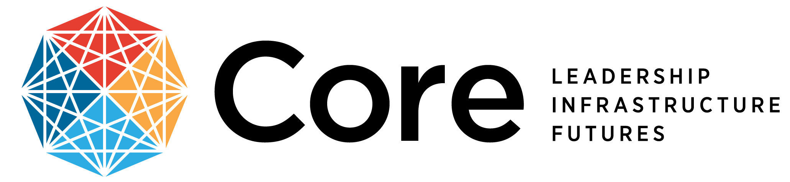
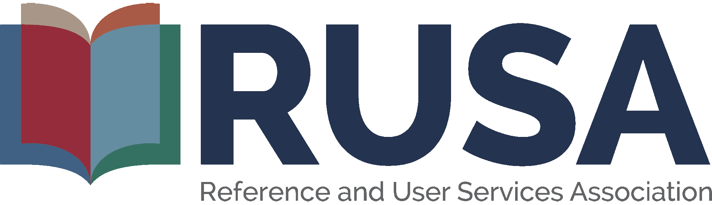
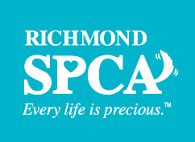

Laura Petruzella
Associations, Organizations & Volunteering
The following is a list of associations & programs I am currently and soon plan to become affiliated with!
 The American Library Association’s mission is “To provide leadership for the development, promotion, and improvement of library and information services and the profession of librarianship in order to enhance learning and ensure access to information for all.”
The American Library Association’s mission is “To provide leadership for the development, promotion, and improvement of library and information services and the profession of librarianship in order to enhance learning and ensure access to information for all.”
 Core: Leadership, Infrastructure, Futures is the national association that advances the profession of librarians and information providers in central roles of leadership and management, collections and technical services, and technology.
 The Reference and User Services Association is a network to educate, empower, and inspire its members to advance the evolution of the profession and better serve users in a continuously changing information society.
The Freedom to Read Foundation (FTRF) is a non-profit legal and educational organization affiliated with the American Library Association. FTRF protects and defends the First Amendment to the Constitution and supports the right of libraries to collect - and individuals to access - information.
Justice Equity Diversity & Inclusion (J.E.D.I.) certification via my employer, Guardian Life, to increase awareness and share experiences that foster an understanding of the challenges that underrepresented communities face.
 Since 2018 I have happily donated my time and energy to supporting the nonprofit, no-kill humane society in Richmond, Virginia. Volunteer opportunities have spanned from dog-walking, to cleaning cat “condos”, to weighing new kittens at intake, to laundry. All of it is worth it and paid back in plenty of furry cuddles and love!